Общие сведения
Программа прдназначена для формирования личного рейтинга просмотренных фильмов.
Поиск, сортировка, фильтр
Поиск в программе находится в верхнем левом углу и осуществлятся по названию. Для поиска нужно ввести название в поле для ввода и нажать "Enter"
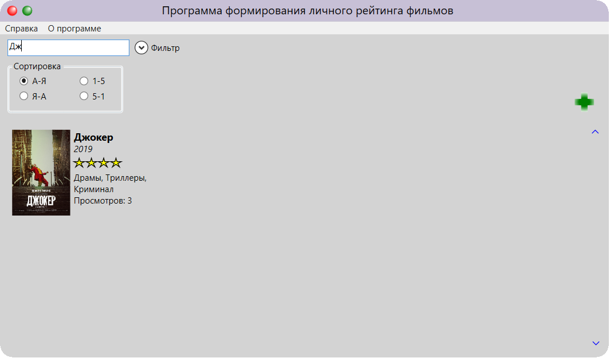Сортировка в программе находится под полем ввода поиска. Для удобства пользователя имеется четыре варианта сортировки. По алфавиту с начала или с конца, и по рейтингу от большего к меньшему и наоборот.
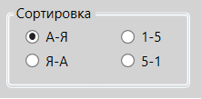Находится там же, где и сортировка. Для осуществления фильтрации нужно выбрать\ввести нужные параметра, после чего нажать "Применить".
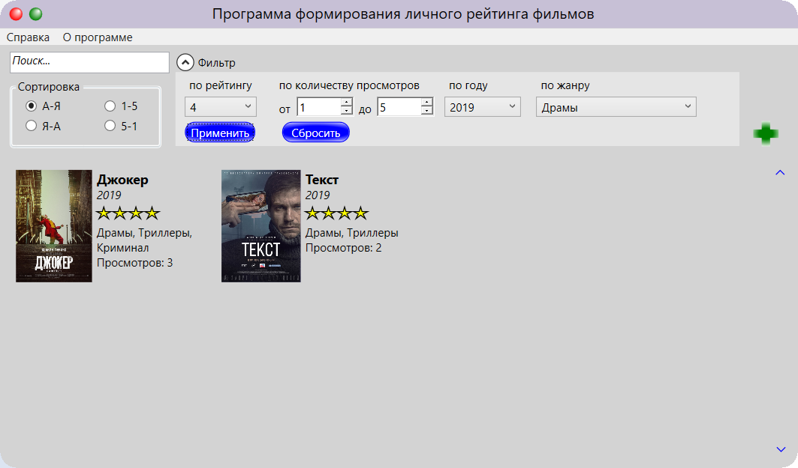Как добавить новый фильм?
Для добавления нового фильма, в главном окне программы нужно нажать на селеный "+", после чего откроется окно добавления нового фильма. Введите все данные и нажмите "Добавить". Фильм добавлен.
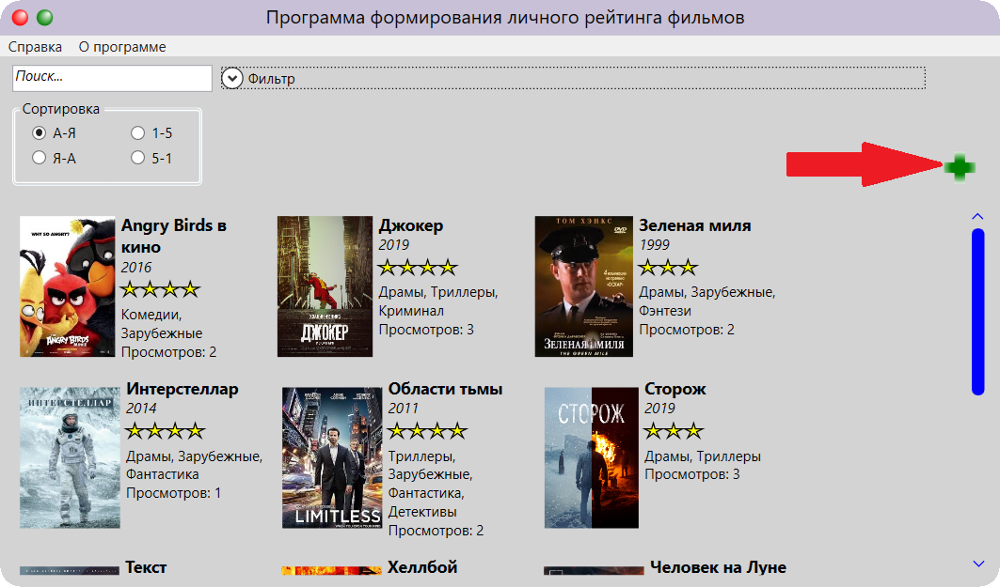 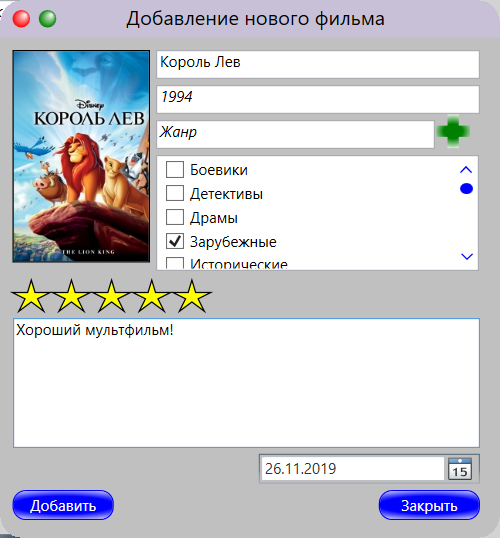 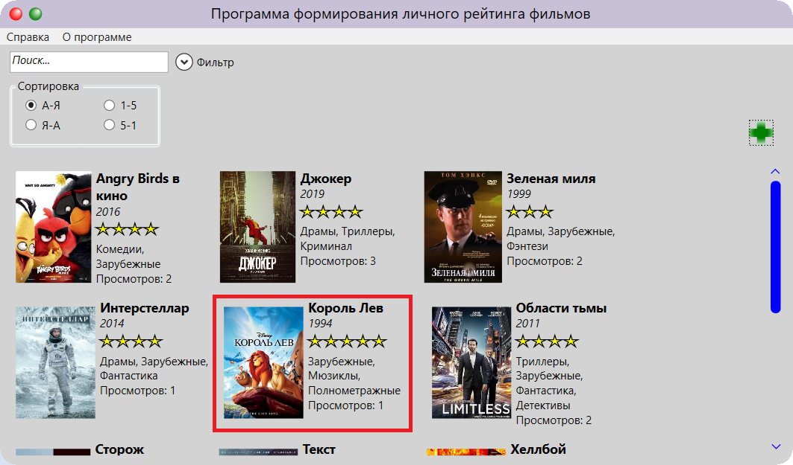Как добавить новый просмотр?
Для добавления нового просмотра нужно в главном окне программы нажать на фильм, в результате будет открыто окно "Просмотры", где в левом верхнем углу нажмите на "+". Введите нужые данные и нажмите "Сохранить". Просмотр добавлен.
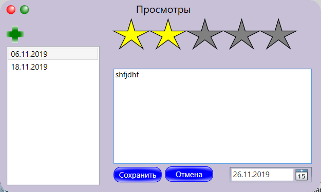 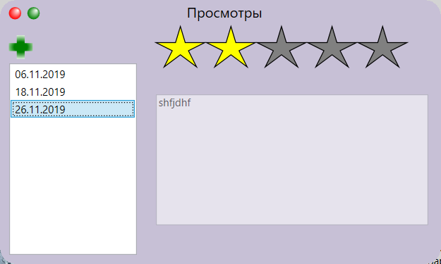Как изменить данные по фильму?
Для изменения данных по фильму наведите курсор на постер фильма на главном экране. После чего нажмите на кнопку "Изменить". Отредактируйте данные, нажмите кнопку "Сохранить".Так же в окне изменения можно добавить пстер, для этого нужно под постером нажать на клавишу "Постер". После чего выберите картинку и нажмите "Ок".
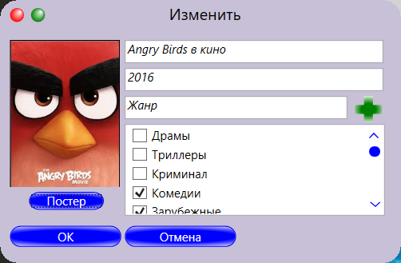 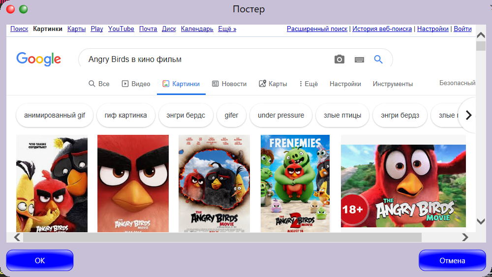Как посмотреть статистику фильмов?
Для просмотра статистики по фильмам наведите курсор на постер фильма на главном экране. После чего нажмите на кнопку "Стаистика". Столбец выбранного фильма на диаграмме будет иметь красный цвет.
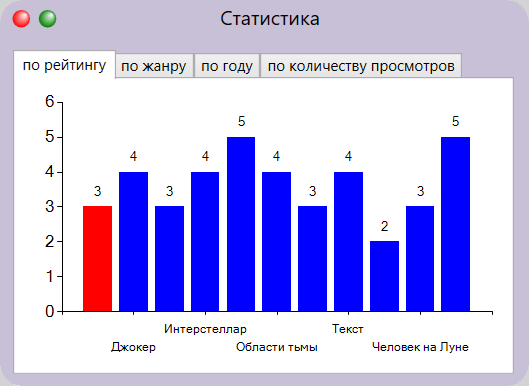 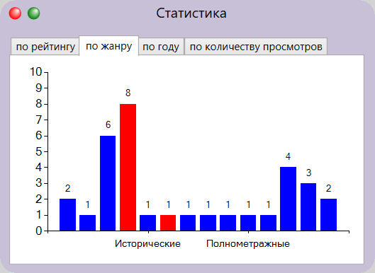 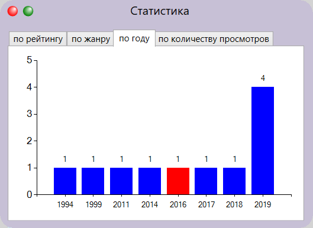 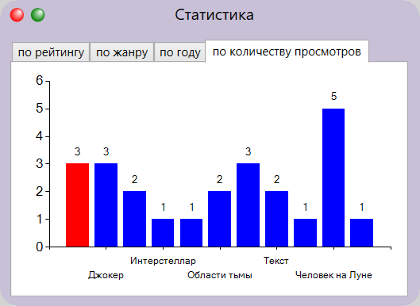